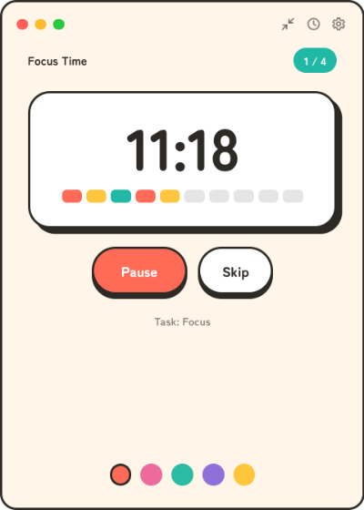
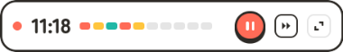
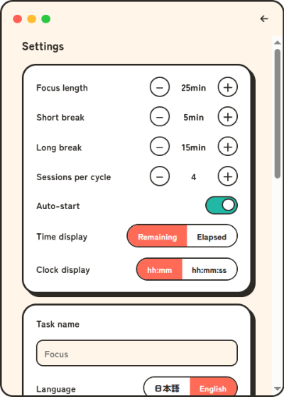

Everything you need to focus, break, and repeat with a little timer in your tray.
Install kizami from the download page, then launch it. The app appears as an icon in your system tray / menu bar, and a small popup opens with the timer ready to go.

kizami follows the classic pomodoro rhythm:
The 1 / 4 badge in the top corner shows where you are in the current set, and the row of blocks under the countdown fills in as the session progresses. All three durations and the number of sessions per set can be changed in Settings.
The timer is wall-clock based: it counts real elapsed time, so hiding the window, switching virtual desktops, or even putting the machine to sleep never makes it drift. If the machine sleeps through the end of a phase, kizami catches up correctly on wake.

Click the shrink button in the popup's title bar to switch to mini mode — a slim, pill-shaped bar with just the countdown, the progress blocks, and start/stop. It takes almost no screen space, so you can keep it in a corner while you work.
Click the clock button in the popup's title bar to turn the popup into a clock. The layout stays the same — only the readout changes: the header reads Clock Mode, the big number shows the current time of day, and the progress blocks fill as the day goes by — empty at midnight, half full at noon. The timer buttons and theme picker stay visible but disabled. The pomodoro timer keeps running in the background and phase notifications still arrive; click the button again to get back to the timer.
kizami is a tray app: closing the popup does not quit it. The timer keeps running in the background, and the tray icon changes to show whether a session is active.
Every phase change fires a desktop notification — time for a break, and time to get back to focus — so the popup can stay closed while you work. Notifications use your OS's native notification system; if you don't see them, check that notifications are allowed for kizami in your system settings.

Open Settings with the gear button in the popup's title bar.
| Setting | What it does |
|---|---|
| Focus length / Short break / Long break | The duration of each phase, in minutes. |
| Sessions per cycle | How many focus sessions to complete before the long break (1–10, default 4). With 1, every break is a long break. |
| Auto-start | Whether the next phase begins automatically when one ends. |
| Time display | Whether the timer shows the time left in the phase, counting down (the default), or the time spent in it, counting up. Phase lengths and when they end are the same either way. |
| Clock display | The time format used by clock mode: hh:mm (the default) or hh:mm:ss. |
| Task name | A short label for what you're working on, shown under the timer. |
| Language | 日本語 or English. kizami follows your OS language on first launch and can be switched here any time. |
| Icon | Switches the tray icon between the 刻 logo and the original tomato. |
| Update | Shows the current version and checks GitHub for a newer release — see Updates. |
| About | Shows the app and runtime versions, license, source, and bundled OSS notices. |
kizami can check GitHub Releases for a newer version and lets you know when one is available — it never downloads or installs anything by itself. The automatic check on startup can be turned off in Settings, where you can still check manually with Check now. If you installed from the AUR, update through your AUR helper instead.
Everything kizami stores lives in two small JSON files in the app-data folder (location
shown for Linux; on Windows it's under %APPDATA%, on macOS under
~/Library/Application Support):
~/.config/kizami/settings.json — durations, sessions per cycle, auto-start,
time display, clock mode and its format, task name, language, theme, and window mode.
~/.config/kizami/update.json — update-check state: whether the automatic
check is on, the version you chose to skip, and when the last check ran.
Privacy: there is no telemetry, no analytics, and no account. The only network request kizami ever makes is the optional update check described above — see the privacy policy.
No. Closing the popup only hides it; the timer keeps running in the background. Click the tray icon to bring it back, and notifications still fire at every phase change.
No. The engine counts real elapsed wall-clock time, so after a sleep the timer is exactly where it should be. If a phase ended while the machine was asleep, kizami moves on correctly when it wakes.
Yes — all three are adjustable in Settings, along with how many focus sessions come before the long break.
On some Linux desktops (notably GNOME) tray icons require an extension such as AppIndicator and KStatusNotifierItem Support. Install and enable it, then restart kizami.
Uninstall the app as usual for your OS, then delete the settings folder (see Where your data lives) if you want to remove every trace.